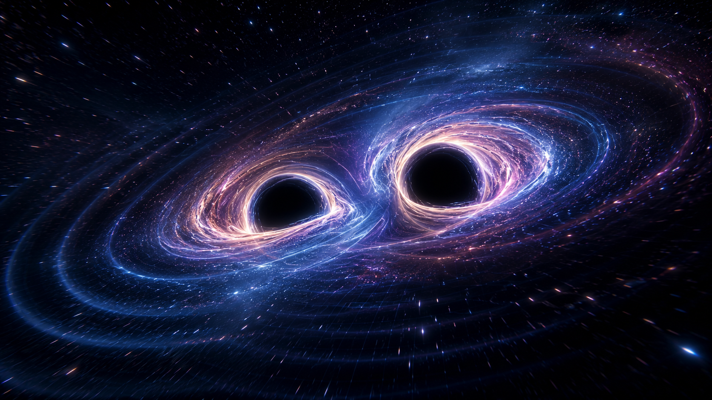
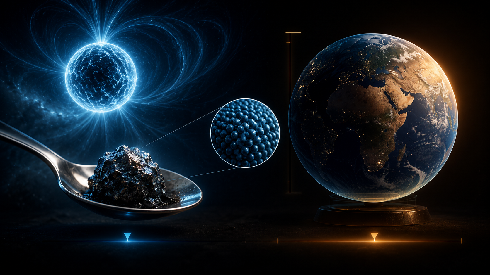
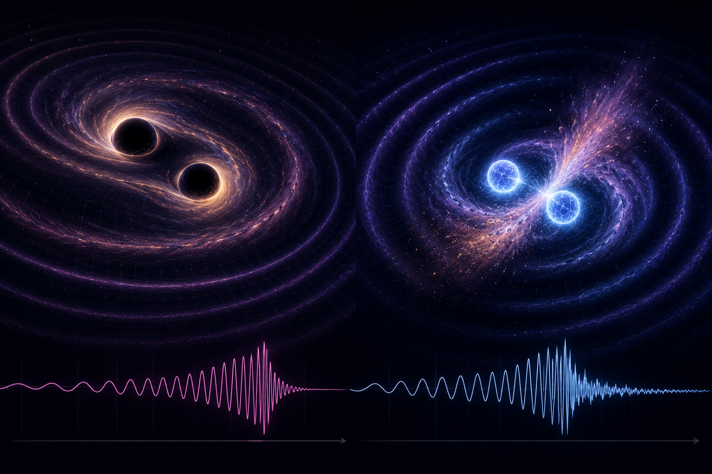

The universe learned to send ripples
Light is not the only messenger in astronomy. For centuries, astronomy mostly meant collecting photons: visible light, radio waves, infrared, X-rays, gamma rays — different flavours of electromagnetic gossip. Gravitational waves changed the rules. They are not light. They are ripples in spacetime itself, produced when massive objects accelerate violently.
This still feels absurd to say out loud. Two compact objects can spiral into each other, shake the geometry of the universe, and more than a billion years later a detector on Earth can notice the faint stretching and squeezing. The universe does not need to be bright to be loud. Sometimes it rings in geometry.
Not air. Not sound. Spacetime.
A sound wave travels through air by compressing and rarefying molecules. A water wave moves through water. A gravitational wave is stranger: it changes distances themselves, stretching space in one direction while squeezing it in the perpendicular direction. The effect is tiny by the time it reaches Earth, but not zero.
Gravitational-wave detectors measure strain: the fractional change in length. If an interferometer arm length is L and the passing wave changes it by ΔL, the measured strain is h. The first LIGO detection, GW150914, had a peak strain of order 10−21.
That number is offensively small. It is the kind of number that makes ordinary precision measurement look almost carefree. Yet the signal matched general relativity extremely well, which is a deeply inconvenient result if you hoped spacetime might be easier to deal with.
Why black holes and neutron stars do the heavy lifting
Any accelerating mass produces gravitational waves in principle, but most sources are laughably weak. To make a detectable signal across cosmic distances, you need something extreme: compact objects orbiting fast in a tight binary. This is where black holes and neutron stars enter the conversation.
Black holes are compact enough to orbit extremely close before merger. They can release staggering amounts of energy in gravitational waves while producing little or no light. Neutron stars are different: they are ultra-dense stellar remnants, formed when a massive star collapses after a supernova but does not quite go all the way to becoming a black hole. Unlike black-hole binaries, neutron-star mergers can also throw out matter, produce kilonova emission, and manufacture heavy elements.


WebGL neutron-star merger simulator
The simulator below is still educational rather than numerical-relativity-grade, but the visual treatment is now more serious. The main window is a WebGL scene: a warped spacetime grid, a fuller background star field, two compact stars spiralling inward, glowing tidal trails, expanding ripple shells, a merger flash, ejecta-like particle bloom, and a LIGO-style detector response. The waveform below shows the chirp rising in amplitude and frequency.
Binary neutron-star inspiral → merger → spacetime ripples
Landscape WebGL view on top, controls underneath. Adjust the component masses, source distance, inclination, and flash strength. The visual is stylised, but the narrative is correct: tighter orbit, faster chirp, stronger strain, then merger and ringdown.
Check your internet connection because this simulation uses Three.js from a CDN.
Educational visual model: this uses simplified chirp scaling and stylised spacetime deformation. It is designed to explain the physics visually, not to replace full numerical-relativity waveform modelling.
The current detector network, in real places on Earth
People usually remember the word LIGO, but gravitational-wave astronomy is bigger than one acronym. The active ground-based network is built around long-baseline laser interferometers in the United States, Europe, and Japan, with GEO600 still important as a technology and high-frequency test-bed instrument. A table makes this easier to remember than yet another paragraph pretending to be noble.
| Detector | Country / site | Arm length | Type / note |
|---|---|---|---|
| LIGO Hanford | Hanford Site, Washington, USA | 4 km | One of the twin NSF LIGO interferometers. |
| LIGO Livingston | Livingston, Louisiana, USA | 4 km | The sister LIGO interferometer used in joint detections. |
| Virgo | Cascina, near Pisa, Italy | 3 km | European interferometer; improves sky localisation with the network. |
| KAGRA | Kamioka, Hida, Gifu, Japan | 3 km | Underground and cryogenic — the detector with the most introvert personality. |
| GEO600 | Near Sarstedt / Hannover, Germany | 600 m | Smaller but scientifically valuable as a detector-development and observing partner. |
Why does the network matter? Because more detectors improve confidence, source localisation, and the reconstruction of source properties. Two detectors can tell you a signal happened. More detectors start telling you where and how.
Why neutron-star mergers are especially beautiful
Black-hole mergers are brilliant for pure gravity, but neutron-star mergers add light to the story. The 2017 event GW170817 was seen in gravitational waves and across electromagnetic wavelengths, making it one of the landmark observations of modern astrophysics. It showed that these mergers help create heavy elements and that gravitational-wave astronomy is naturally part of a wider observational network.
That is why this upgraded post leans harder into neutron stars visually. They bridge two worlds: strong-field gravity and observable matter. You get the chirp, the merger, the ejecta, the afterglow, and a reminder that the periodic table has a much more violent backstory than school chemistry usually admits.

A few compact-object facts that still feel unreal
- A spoonful of neutron-star material is commonly described as weighing around a billion tons on Earth.
- Black holes can merge without producing much or any light, yet still broadcast one of the cleanest gravitational-wave signals in nature.
- Neutron-star mergers help explain where some of the heaviest elements in the universe come from.
- Human beings live, on average, well under a century — and yet we have managed to detect ripples from objects colliding hundreds of millions or billions of years ago. That is both inspiring and slightly unnerving.
If you liked the compact-object side of this post, the natural next steps are obvious: revisit my black-hole blog for the geometry-heavy side, and then keep an eye out for the dedicated neutron-star post, which deserves its own stage.
Comments & reactions
Powered by GitHub Discussions via giscus.